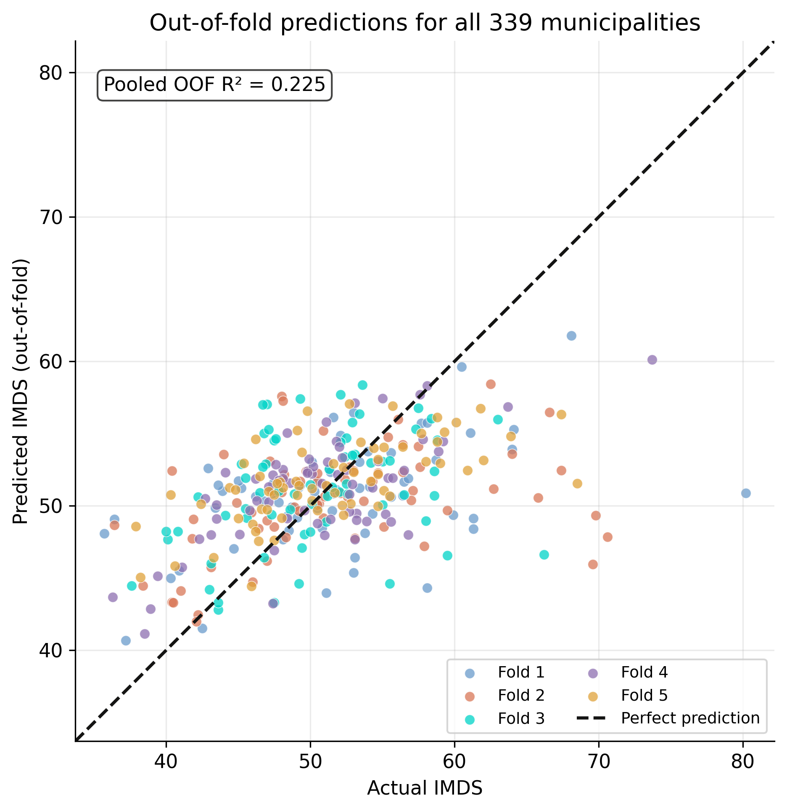
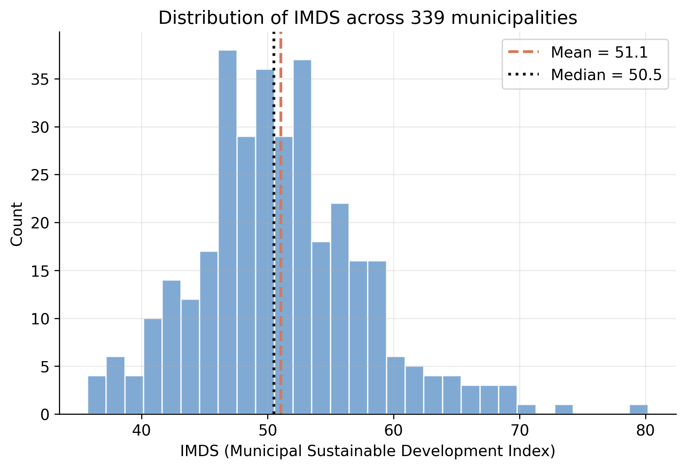
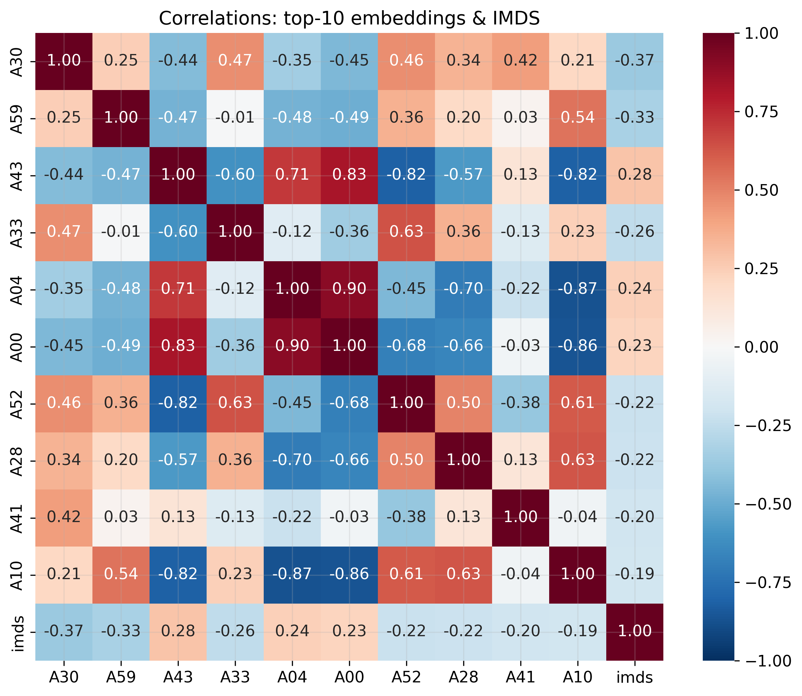
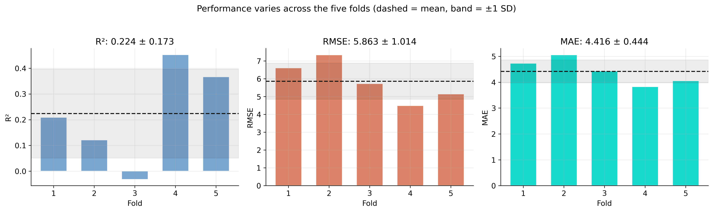
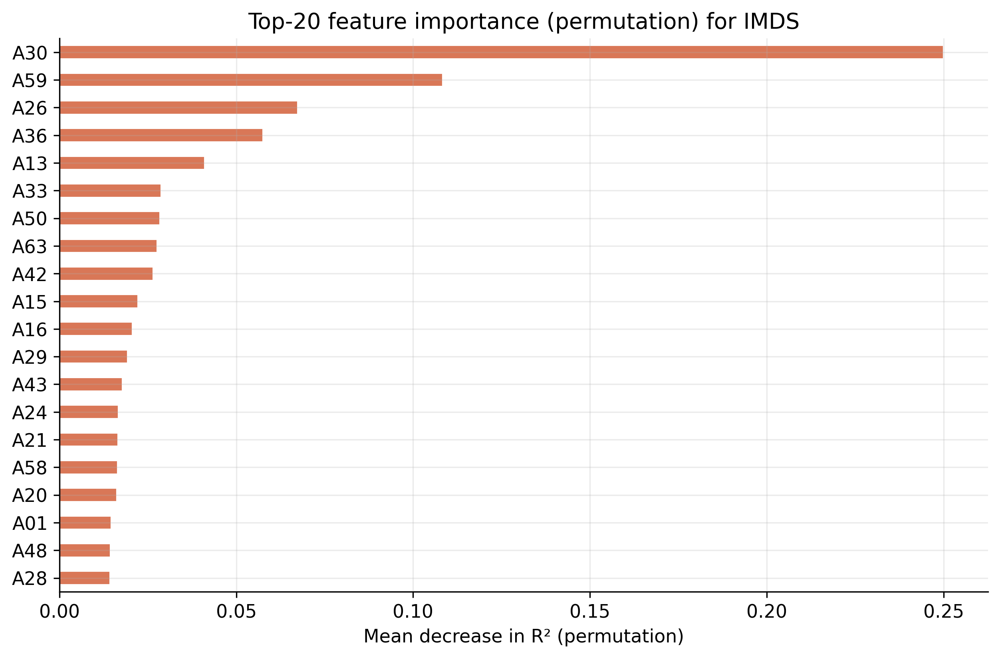
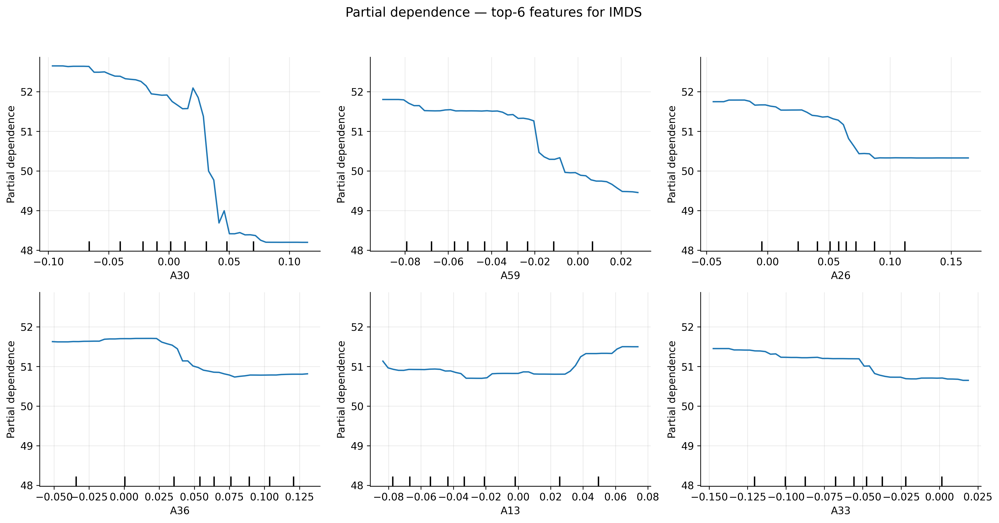
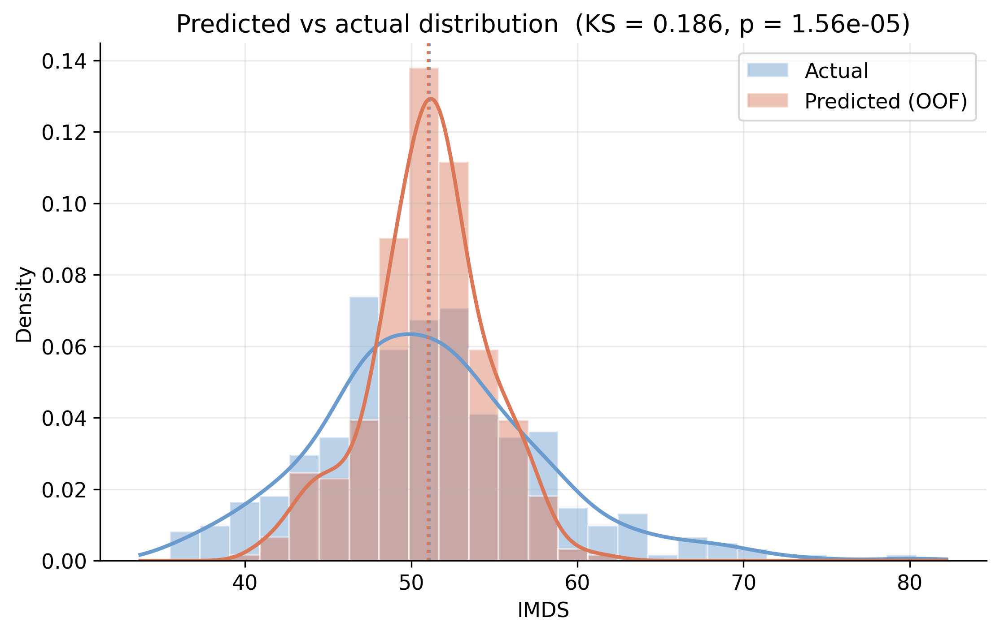
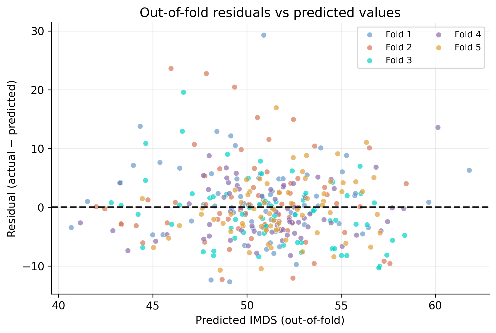
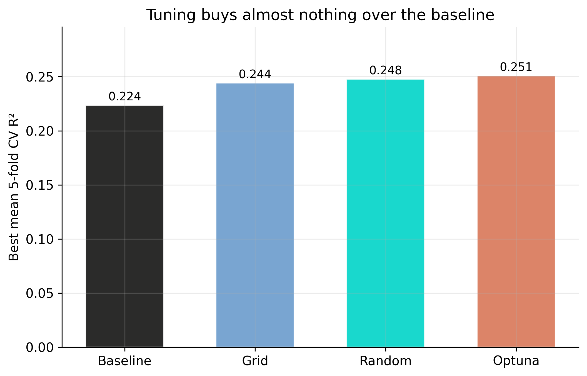

How much development signal hides in a satellite image?
Nagoya University (GSID)
July 8, 2026
Act I
Bolivia has 339 municipalities. Many lack reliable survey data — yet every one of them is photographed from space.
A Google embedding model crushes each 2017 image into 64 numbers. Do those numbers know anything about human development?

Out-of-fold predicted vs actual IMDS for all 339 municipalities, colored by cross-validation fold; the dashed line is perfect prediction.
Act II

Distribution of IMDS across 339 municipalities; dashed = mean (51.1), dotted = median (50.5).

Correlation matrix: the ten embedding dimensions most correlated with IMDS.
\[\hat{y} = \frac{1}{B} \sum_{b=1}^{B} T_b(\mathbf{x})\]
Each tree \(T_b\) is grown on a bootstrap resample, and at every split only \(\sqrt{64}=8\) features are even considered.
Bootstrap rows + random feature subsets = trees that make different mistakes; averaging cancels the noise.
A single 80/20 split is a lottery: across 200 random seeds the test R-squared ranges from −0.09 to 0.46 (Appendix A).
kf = KFold(n_splits=5, shuffle=True, random_state=42)
baseline_rf = RandomForestRegressor(n_estimators=100, random_state=42)
cv = cross_validate(baseline_rf, X, y, cv=kf,
scoring=("r2", "neg_root_mean_squared_error", "neg_mean_absolute_error"))
# per-fold R²: [ 0.21 0.12 -0.03 0.45 0.37 ]
# mean R² = 0.224 ± 0.173
oof_pred = cross_val_predict(baseline_rf, X, y, cv=kf) # one prediction / town
# pooled out-of-fold R² = 0.225Fold 3 scores −0.03 — worse than guessing the average. One lucky split could have shown you only the 0.45.

Per-fold R-squared, RMSE, and MAE; dashed line = mean, shaded band = ±1 standard deviation.

Top-20 embedding dimensions by permutation importance (drop in R-squared when a feature is shuffled).
Two very different methods crowning the same feature is evidence A30 is real signal, not a counting artifact.

Partial dependence for the top-6 embeddings: sharp rises then plateaus, not straight lines.
Act III
0.22
pooled out-of-fold R-squared (per-fold 0.224 ± 0.173, RMSE 5.95, MAE 4.42)

Density of actual IMDS vs out-of-fold predictions; a Kolmogorov–Smirnov test rejects equal distributions.

Out-of-fold residuals versus predicted IMDS, colored by fold: centered on zero but tilting up where the under-predicted big cities sit.

Best cross-validated R-squared: baseline vs grid search, random search, and Optuna (Appendix B).
The methods rank as theory predicts — Optuna ≥ random ≥ grid — but every gain is smaller than the 0.17 fold-to-fold noise.
Objection. A Random Forest with deep trees on only 339 rows must be memorizing noise.
Response. Overfitting would make held-out performance collapse. Instead every fold is tested on towns it never trained on, and the pooled out-of-fold R-squared still sits at 0.22. The model is under-powered by the features, not over-fit to the rows.